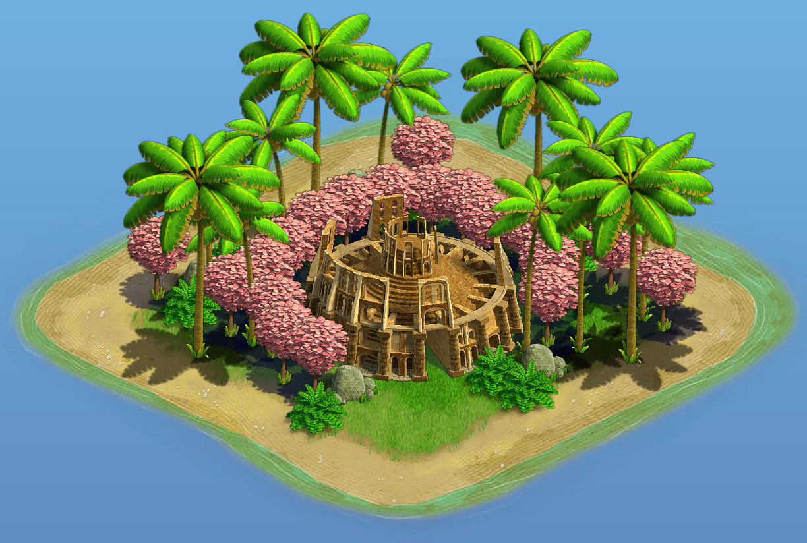

Получено: файл; исходный URL. Скриншот локации; оригинал 1224×824 px.


Остров Омега
Браузерная социальная версия; снимок 2013- Тип
- Острова
- Версия и дата
- Браузерная социальная версия; снимок 2013
Данные по источнику · Браузерная социальная версия · снимок 2013
Предварительно: один материал ЗомбиСити / зеркало; требует сверки. Требуется сверка.
- Ресурсы (источник)
- Бревна Камни Бревна пальмы
- Описание и доступ (исторический источник)
- Чтобы попасть на Остров Омега, нужно сперва достроить куб На Омегу, который находится на Острове Альфа. На Острове Омега находится тот самый Вавилон, в котором можно создавать Зомбаксы, саму ценную игровую валюту.
Связанные сущности
нет проверенных связей — требуется сверка.